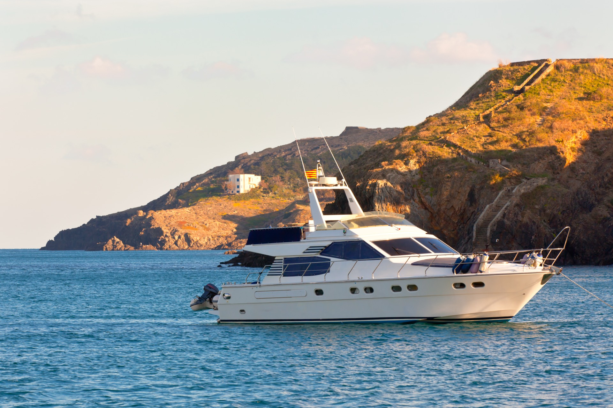

Choosing the right yacht is the single most important decision when planning a charter. Too small and your guests feel cramped. Too large and the atmosphere feels hollow. The sweet spot is a vessel that gives everyone room to move comfortably while maintaining the energy and intimacy that make yacht events special.
With over 100 vessels in the Atlantis Charter fleet, the options can feel overwhelming. This guide simplifies the process by matching yacht sizes to group sizes, event types, and budgets - so you can make a confident choice and focus on enjoying the experience.
The Golden Rule of Yacht Sizing
The industry standard is to allow approximately 10-15 square feet of deck space per guest for cocktail-style events, and 15-20 square feet for seated dinners. But raw capacity numbers only tell part of the story. A yacht rated for 50 passengers might feel perfect with 35 guests at a cocktail party but cramped with 50 at a seated dinner.
Our recommendation: plan for 70-80% of maximum capacity for most events. This leaves room for food stations, a dance area, and comfortable circulation. For formal seated events, plan for 50-60% of maximum capacity.
Yacht Size Categories
Small Yachts (30-45 Feet) - 2 to 10 Guests
Small yachts are ideal for intimate experiences. Think couples on a sunset cruise, a small group of friends on a fishing trip, or a family outing. These vessels are nimble, can access shallow waters and small coves, and offer a genuine connection with the sea.
- Best for: Romantic getaways, small fishing charters, family outings, proposals
- Amenities: Basic cabin, marine head (bathroom), cockpit seating, small galley
- Budget range: $800 - $2,500 for a half-day charter
- Considerations: Limited weather protection. No separate indoor entertaining space on most models.
Mid-Size Yachts (46-70 Feet) - 10 to 30 Guests
The most versatile category in our fleet. Mid-size yachts offer the perfect balance of space, comfort, and atmosphere. They feature enclosed salons for weather-protected entertaining, open decks for fresh-air enjoyment, and enough space for a proper bar setup and catering station.
- Best for: Birthday parties, engagement celebrations, small corporate events, milestone anniversaries, bachelor/bachelorette parties
- Amenities: Climate-controlled salon, full-size head, galley kitchen, Bluetooth audio, multiple seating areas
- Budget range: $2,500 - $6,000 for a half-day charter
- Considerations: This is the sweet spot for most private events. Big enough to feel luxurious, small enough to feel intimate.

Large Yachts (70-100 Feet) - 30 to 80 Guests
Large yachts provide genuine event-venue capability while maintaining the exclusivity and elegance of a private charter. Multiple decks create natural zones for different activities - a sun deck for lounging, a main salon for dining, and a flybridge for cocktails with panoramic views.
- Best for: Large parties, corporate events, wedding receptions, holiday celebrations, product launches
- Amenities: Multiple decks, professional galley, full bar, sound system, A/V equipment, multiple heads, crew quarters
- Budget range: $5,000 - $15,000 for a half-day charter
- Considerations: These vessels often require advance booking, especially for peak season weekends.
Mega Yachts (100+ Feet) - 80 to 200 Guests
Mega yachts are floating event venues that rival the finest ballrooms in Boston. They feature multiple entertaining levels, commercial-grade sound and lighting systems, professional kitchens, and the kind of luxury finishes that make a statement. When you want to create an event that your guests have never experienced before, a mega yacht delivers.
- Best for: Galas, large corporate events, milestone celebrations, fundraisers, brand launches
- Amenities: Grand salon, dance floor, DJ booth, commercial galley, multiple bars, state rooms, professional crew of 6+
- Budget range: $12,000 - $35,000+ for a half-day charter
- Considerations: Full event production is available. Plan 6-12 weeks in advance for best vessel selection.
Matching Yacht Size to Event Type
Beyond group size, the nature of your event should influence your vessel choice:
Seated Dinner Events
Choose one size up from what your headcount would normally suggest. A seated dinner for 20 guests works best on a yacht rated for 35-40, ensuring comfortable table spacing and room for service.
Cocktail Parties
You can use closer to full capacity because guests are standing and circulating. A yacht rated for 50 can comfortably host 40-45 at a cocktail event. See our party planning guide for more details.
Fishing Charters
Fishing boats are sized differently than party yachts. A 35-foot fishing boat comfortably handles 4-6 anglers, while a 50-foot sportfisher accommodates 8-10. More space per person is needed because of rod movement, fighting fish, and tackle storage. Read our fishing charter guide for specific recommendations.
Mixed Events
Events that combine activities - for example, a meeting followed by cocktails, or swimming followed by dinner - benefit from larger vessels with distinct zones for each activity.
Catamaran vs. Monohull
Catamarans deserve special mention because their twin-hull design provides significantly more usable deck space than a monohull yacht of the same length. A 50-foot catamaran offers roughly 40% more entertaining space than a 50-foot motor yacht. They are also more stable, making them excellent choices for guests who are new to boating or concerned about motion sickness.
The trade-off is that catamarans cannot reach the same top speeds as monohull motor yachts, and they have a different aesthetic. For events where stability and space are priorities, catamarans are an excellent choice. For a deeper comparison, see our yacht vs. sailboat guide.
Common Sizing Mistakes to Avoid
- Optimizing for maximum capacity. Just because a yacht can hold 60 guests doesn't mean it should for your event. Comfort trumps capacity.
- Ignoring weather options. If your event could encounter rain or cold, ensure the yacht has sufficient indoor space for your entire group.
- Forgetting about the crew. Larger events require more crew members, who also need space to work. Factor this into your capacity planning.
- Not accounting for entertainment equipment. A DJ setup, buffet station, or photo booth takes up guest space. Plan accordingly.
- Booking too small to save money. A cramped event is never worth the savings. Your guests will remember the experience, not the price difference between a 50-foot and 60-foot yacht.
Let Us Help You Choose
Still not sure which yacht is right for your event? That is exactly what our charter specialists are here for. Share your group size, event type, and vision, and we will recommend specific vessels from our fleet that match your needs. We can also arrange deck tours so you can see the options in person before booking.
Find Your Perfect Yacht
Tell us about your event and we'll match you with the ideal vessel from our fleet of 100+ boats.
Get Recommendations